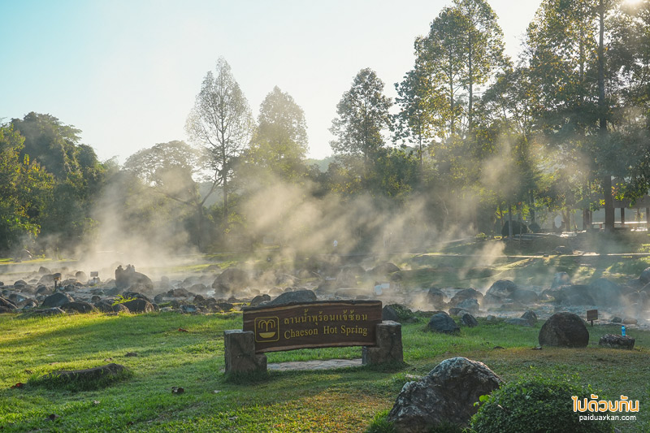

Jaeson Hotsprings
Lampang

รู้จักกับนํ้าพุร้อน
อุทยานแห่งชาติเชอเซิน ครอบคลุมพื้นที่ 592 ตารางกิโลเมตร ในอำเภอเมืองพัน อำเภอแชโฮม และอำเภอวังเหนือ จังหวัดลำปาง เป็นแหล่งท่องเที่ยวยอดนิยมด้วยความงามทางธรรมชาติ จุดเด่นหลักของอุทยานคือบ่อน้ำพุร้อนและน้ำตกที่สวยงามและร่มรื่น นอกจากนี้ยังมีถ้ำ จุดชมวิวตามถนน และเส้นทางเดินป่า รวมถึงดอกไม้ตามฤดูกาลที่บานสะพรั่งในช่วงฤดูหนาว อุทยานแห่งนี้อยู่ห่างจากลำปางประมาณ 75 กิโลเมตร ห่างจากเชียงใหม่ 85 กิโลเมตร และห่างจากเชียงราย 180 กิโลเมตร
เทือกเขาในอุทยานเป็นส่วนหนึ่งของเทือกเขาขุนตาล โดยมียอดเขาสูงที่สุดประมาณ 2,000 เมตรเหนือระดับน้ำทะเล เทือกเขาภายในอุทยานเป็นแหล่งน้ำที่สำคัญสำหรับพื้นที่โดยรอบ ป่าในอุทยานแห่งชาติเป็นป่าผลัดใบผสมและป่าดิบชื้นผลัดใบประเภทดิปเทอโรคาร์ป